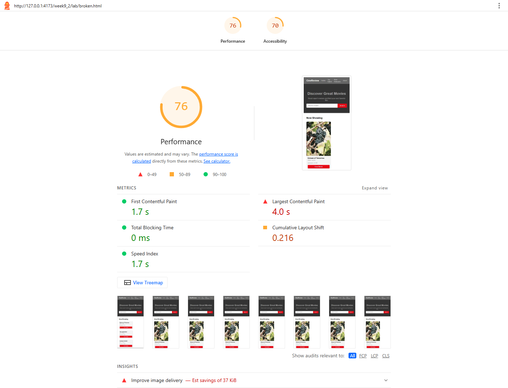
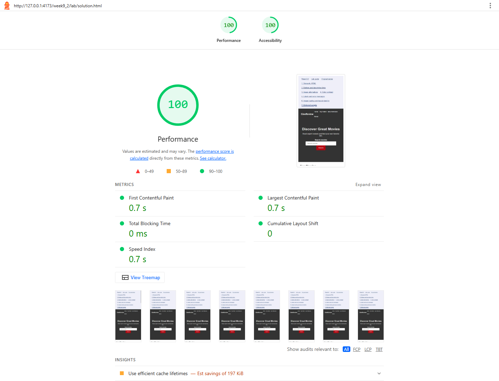

WEEK 9.2 / ACCESSIBILITY & PERFORMANCE LAB
Fix the Broken Website
Seven completed stages covering semantic HTML, keyboard controls, image alternatives, contrast, forms and loading performance. Each stage shows the cumulative changes from the baseline.
Local mobile Lighthouse: Performance 76 to 100; Accessibility 70 to 100. Open Audit evidence below for the saved runs.
Audit evidence · before and after
Performance: 76 → 100 · Accessibility: 70 → 100
Actual Lighthouse mobile runs on a local server with the same simulated throttling. Scores vary between runs. The original uses remote placeholder images; the completed page uses local copies of those images, so network origin and redirect differences also contribute.


Automated scores are supplemented by browser checks of search, keyboard activation, details state, error focus, correction and valid submission. Automated checks alone do not establish full WCAG conformance.
Contrast measurements
| Text | Before | After |
|---|---|---|
| Navigation links | #cccccc on #6666663.58:1 |
#ffffff on #33333312.63:1 |
| Movie metadata | #999999 on #f5f5f52.61:1 |
#555555 on #f5f5f56.84:1 |
| Featured text | #aaaaaa on #eeeeee2.00:1 |
#555555 on #eeeeee6.43:1 |
| Newsletter text | #bbbbbb on #ffffff1.92:1 |
#555555 on #ffffff7.46:1 |
| Footer text | #666666 on #2222222.77:1 |
#cccccc on #2222229.91:1 |
Normal-text minimum: 4.5:1. The header logo, hero text, buttons and links were checked separately; not every contrast estimate in the starter’s comments matches the computed ratio.
Step 1 · Semantic HTML
Semantic HTML
header, navigation, main, sections, movie articles and footer replace generic structural wrappers. Added a skip link and heading hierarchy.
<header>…<nav aria-label="CineReview">…</nav></header>
<main id="main" tabindex="-1"><section>…<article>…</article></section></main>Step 2 · Buttons and links
Buttons and links
Real buttons support Enter and Space; movie details expand in place with aria-expanded. Search filters the title list. Links point to named review, privacy and contact sections.
<button type="button" aria-expanded="false" aria-controls="details-0">View Details</button>Step 3 · Image alternatives
Image alternatives
Four content photographs receive accurate descriptions. The repeated featured photo is decorative and uses empty alt text. These are placeholders, not actual movie posters.
<img src="…" alt="Yellow trams below a hilltop church in Lisbon">
<img src="…" alt="">Step 4 · Contrast
Contrast
Five failing normal-text pairs now exceed 4.5:1. Button and link colors were checked too. Ratios below are computed from the actual CSS color values.
.movie-year, .movie-rating { color:#555; }
.featured-text p { color:#555; }Step 5 · Form labels and errors
Form labels and errors
Every input has a visible label. Newsletter errors use aria-describedby and aria-invalid; submit focuses the first invalid field. The form is a local demo and sends no information.
<label for="subscriber-email">Email address</label>
<input id="subscriber-email" type="email" required aria-describedby="subscriber-email-error">
<p id="subscriber-email-error" class="field-error"></p>Step 6 · Images and layout
Images and layout
All images have intrinsic dimensions. The four movie thumbnails stay eager because they can be visible initially on a wide screen; only the lower featured image is lazy. Local copies of the same supplied photographs make the completed page reliable.
<img src="../assets/featured.jpg" alt="" width="360" height="500" loading="lazy" decoding="async">Step 7 · Script loading
Script loading
Both original external library scripts move to the end of body with defer, as the lab requests. The new app script is external and deferred too. Inline classic scripts would not gain deferral from this attribute.
<!-- At the end of body -->
<script src="https://cdn.jsdelivr.net/npm/jquery@3.7.1/dist/jquery.min.js" defer></script>
<script src="https://cdn.jsdelivr.net/npm/bootstrap@5.3.3/dist/js/bootstrap.bundle.min.js" defer></script>
<script src="lab.js" defer></script>Sources and test notes
CineReview starter source: broken.html. The lab contains five image elements, including a repeated decorative illustration; all five are handled. This lab follows its instruction to put deferred scripts at body end. The performance lecture’s head-plus-defer approach is demonstrated separately in E3.
Placeholder photos: Lorem Picsum. Fictional movie names and review text come from the supplied classroom starter.